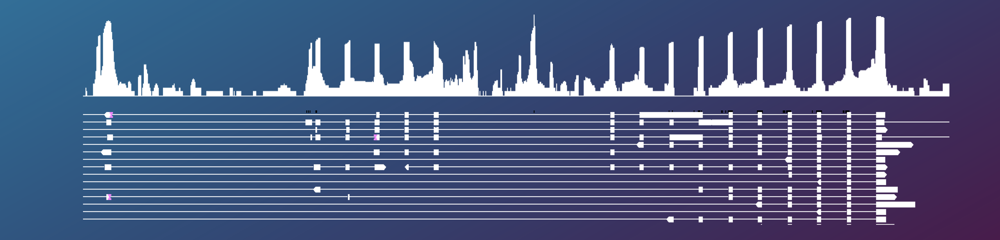

In my postdoctoral research, I’m leveraging long-read genomic and
transcriptomic data to understand the causes and consequences of gene
family expansion and contraction. Exploring a classical example of
environmental adaptation, the evolution of antifreeze protein (AFP)
genes in polar fishes, I’m using PacBio HiFi data to study structural
genomic variation such as copy number variants, translocation, and
inversion.
In shallow-water, cold-adapted lineages that experienced expansions
in AFP copy number, I’m employing full-length long-read RNA-seq to
confirm the expression of duplicated AFP genes and understand how gene
family expansion has influenced their regulation.
In recent work led by undergraduate Owen Moosman, we have developed
and applied tools to more accurately study structural variants in
alignments of long reads to haplotype-aware data structures such as
phased genomes and pangenomes.
The role of epigenomic processes such as DNA methylation in driving
changes in gene expression and phenotype is poorly understood. Part of
this knowledge gap is attributed to (i) poor understanding of how
different types of epigenomic modifications to DNA and chromatin
interact and (ii) poor integration of epigenomic and transcriptomic
data. I have integrated ATAC-seq with bisulfite sequencing and RNA-seq
sampled from purple sea urchins exposed to experimental upwelling to
investigate how chromatin accessibility influences associations between
differential DNA methylation and expression in response to environmental
stress.
To improve multiomic studies of DNA methylation and gene expression,
I am currently codinge a structural equation modeling approach to test
for changes in gene expression that are associated with
environmentally-induced changes in DNA methylation. This project
leverages whole genome bisulfite sequencing data and RNA-seq from urchin
larvae spawned in a quantitative genetic breeding design.
Section forthcoming br>
Laboratory experiments are a hallmark of my scientific approach. I
frequently employ common garden experiments, multigenerational studies,
and quantitative genetic breeding designs under highly-controlled
environmental manipulation . These experiments allow me understand how
global change stressors reshape the expression of genetic variation,
epigenetic modifications, and regulation of the genome.
Section forthcoming
Section forthcoming